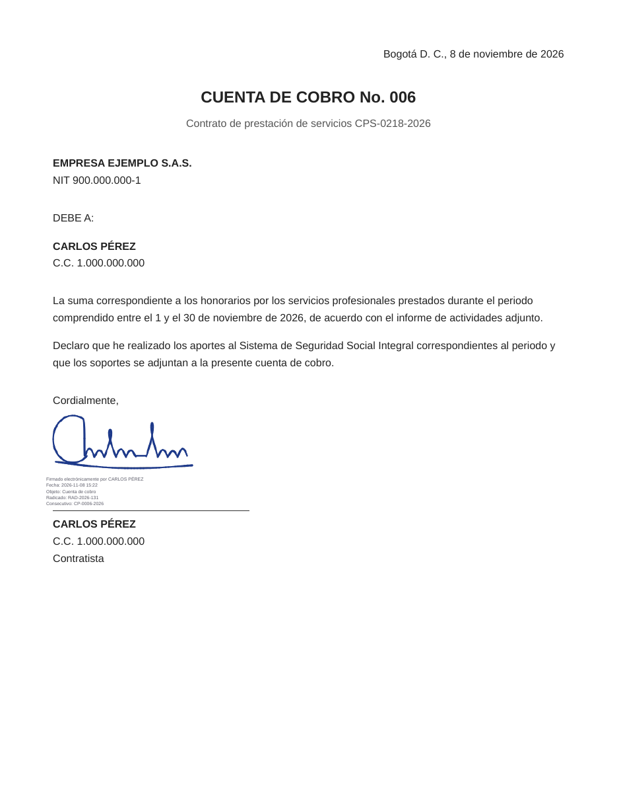
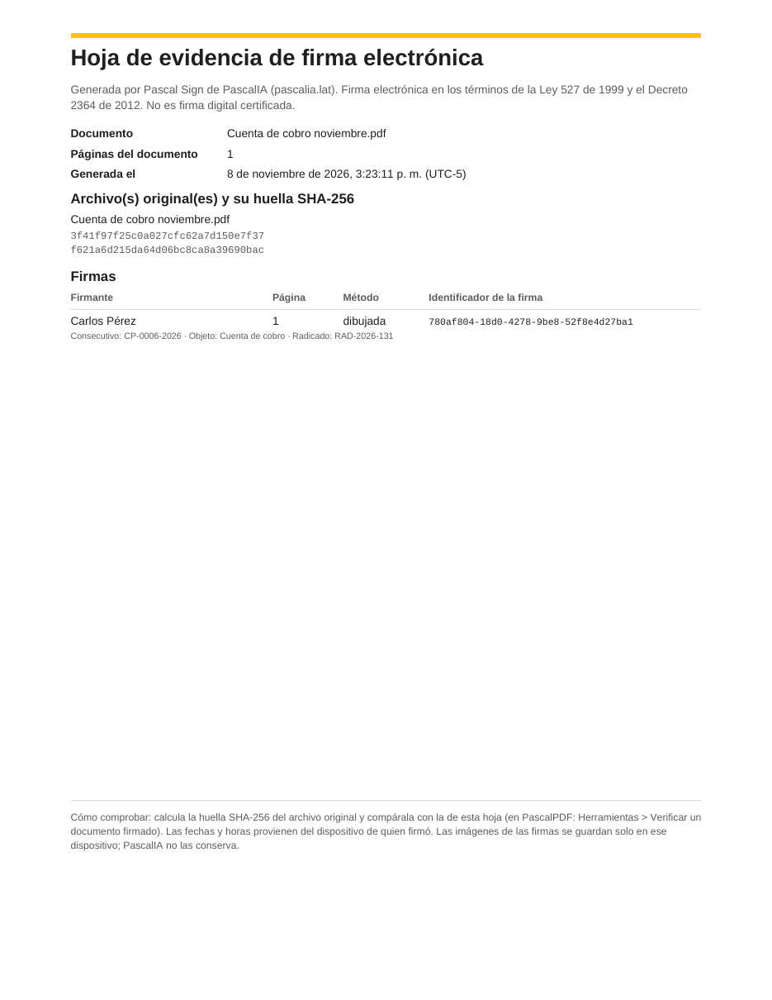
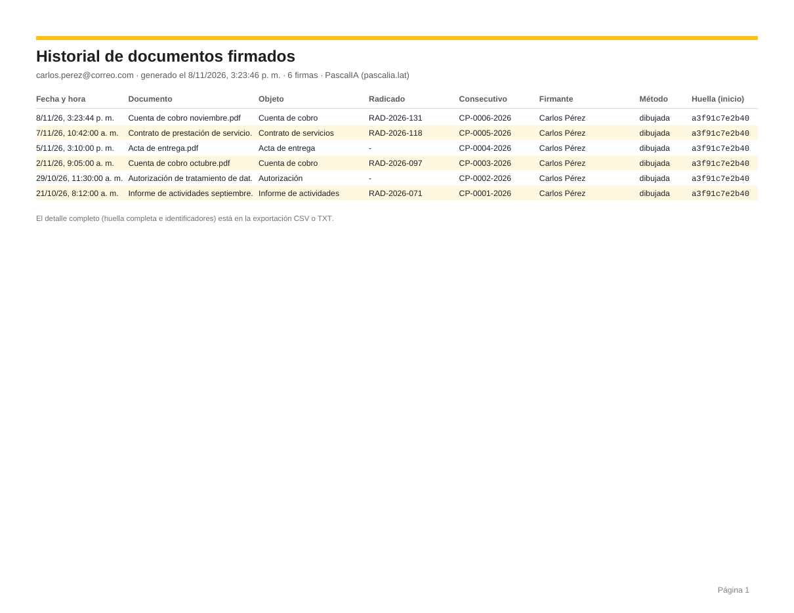

Pascal Sign · en acción
Así se firma,
de verdad
La app real, paso a paso
1Entra a la app
2Abre tu PDF
3Dibuja tu firma
3O sube una imagen
3O tómale una foto
3Dibuja tu firma
4Nombre, objeto y radicado
5Arrástrala a su lugar
5Ajusta el tamaño
6Guarda el PDF firmado
7Descarga el consolidado
8Delega tu firma


Tu PDF firmadocon nombre, fecha, consecutivo y hoja de evidencia

Consolidado de firmasen PDF, Excel (CSV) o TXT
Entras a pascalia.lat/PascalSign… y
abres el PDF que necesitas firmar.
Tocas «Firmar»… y dibujas tu firma con
el dedo.
¿No quieres dibujarla? Sube una foto de
tu firma… o tómale una foto con la
cámara. La app quita el fondo y las
sombras, y deja solo el trazo.
Escribes tu nombre, el objeto del
documento y, si quieres, el radicado.
La firma aparece en la página: la
arrastras hasta su lugar… y con el
círculo amarillo ajustas el tamaño.
Tocas «Listo» y guardas tu PDF firmado:
con tu nombre, la fecha, el consecutivo…
y una hoja de evidencia.
En «Mi cuenta» descargas el consolidado
de todas tus firmas.
Y si alguien firma por ti, le delegas tu
firma: eliges a la persona, por cuánto
tiempo y para qué documentos. Y la
suspendes o la revocas cuando quieras.
Firma desde
tu celular, hoy
Escanea y pruébalo
7 días gratis
Pascal Sign · PascalIA